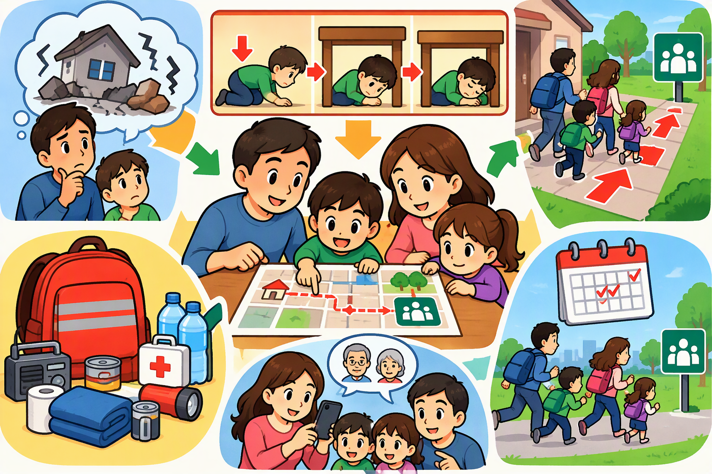

Plan familiar · Generado
Plan de emergencia listo
Un protocolo sencillo, creado para tu familia y tu hogar.

Plan familiar de emergencia
PersonalizadoPlan según el diagnóstico: 2 pisos en Ladera de cerro o suelo inestable.
1. Antes · Preparación
- Revisen la mochila de emergencia semanalmente.
- Aseguren los muebles y despejen las rutas de salida.
- Practiquen el punto de encuentro familiar.
2. Durante · Protección y evacuación
- Agáchate, cúbrete y sujétate.
- Aléjate de ventanas y objetos que puedan caer.
- Evacúa cuando el movimiento termine.
3. Después · Reunificación
- Dirígete al punto de encuentro acordado.
- Confirma que toda la familia esté bien.
- Usa mensajes de texto para comunicarte.